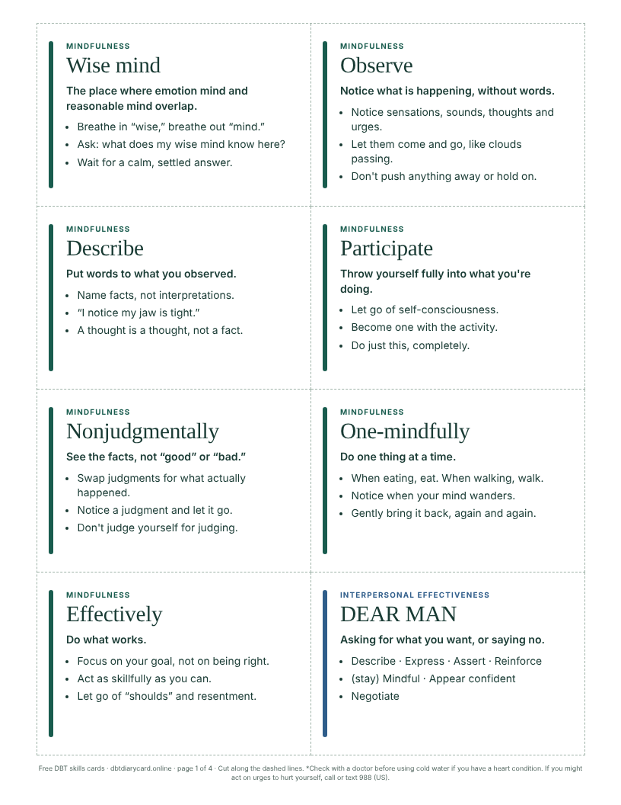

Free download · DBT skills
Free Printable DBT Skills Cards
A deck of 30 pocket-size cards, one DBT skill per card, covering all four skills modules. Print them, cut them out, and keep the skills you need where you can reach them.
4 pages · 30 skills + 2 blank cards · no sign-up · free to print and copy for personal or clinical use

What are DBT skills cards?
DBT skills cards are flashcards for Dialectical Behavior Therapy. Each card holds one skill from Marsha Linehan's four DBT skills modules: mindfulness, interpersonal effectiveness, emotion regulation and distress tolerance. They are meant to be carried, so the skill is in your hand when an urge or a hard conversation shows up, not just in a binder at home.
Search for "DBT cards" and you'll also find DBT diary cards. Those are different: a diary card is the weekly sheet you fill in to track emotions, urges, target behaviors and the skills you used. If that's what you're looking for, use the free online DBT diary card or the printable blank diary card. The two work well together, as described below.
What's on each card
Every card has the same three parts, so you can read it in a few seconds:
- The skill and its module, color-coded: green for mindfulness, blue for interpersonal effectiveness, amber for emotion regulation and plum for distress tolerance.
- One line on what the skill is for.
- Three short cues for doing it. For acronym skills like DEAR MAN, TIPP and IMPROVE, the cues spell out the letters.
The last two cards are blank, with lines for the skill name, what it is and how you do it. Use them for skills your program teaches that aren't in the deck, or for your own version of a skill.
The 30 skills in the deck
This is the same set of 30 skills as the checklist on the online diary card, so you can practice from a card and tick it off on your card the same day.
Mindfulness
7 cards. The core skills the other modules build on.
- Wise mind
- The place where emotion mind and reasonable mind overlap. Breathe in “wise,” breathe out “mind.” Ask: what does my wise mind know here? Wait for a calm, settled answer.
- Observe
- Notice what is happening, without words. Notice sensations, sounds, thoughts and urges. Let them come and go, like clouds passing. Don't push anything away or hold on.
- Describe
- Put words to what you observed. Name facts, not interpretations. “I notice my jaw is tight.” A thought is a thought, not a fact.
- Participate
- Throw yourself fully into what you're doing. Let go of self-consciousness. Become one with the activity. Do just this, completely.
- Nonjudgmentally
- See the facts, not “good” or “bad.” Swap judgments for what actually happened. Notice a judgment and let it go. Don't judge yourself for judging.
- One-mindfully
- Do one thing at a time. When eating, eat. When walking, walk. Notice when your mind wanders. Gently bring it back, again and again.
- Effectively
- Do what works. Focus on your goal, not on being right. Act as skillfully as you can. Let go of “shoulds” and resentment.
Interpersonal effectiveness
5 cards. Asking for what you need while keeping the relationship and your self-respect.
- DEAR MAN
- Asking for what you want, or saying no. Describe · Express · Assert · Reinforce. (stay) Mindful · Appear confident. Negotiate.
- GIVE
- Keeping the relationship while you ask. (be) Gentle: no attacks or threats. (act) Interested: listen. Validate · (use an) Easy manner.
- FAST
- Keeping your self-respect. (be) Fair to yourself and to them. (no excess) Apologies. Stick to your values · (be) Truthful.
- Validating others
- Show that their feelings make sense. Listen fully and reflect back what you heard. Find the part that is valid. “That makes sense, given…”
- Mindfulness of others
- Pay attention to others with curiosity. Observe what they say and do. Drop assumptions and mind-reading. Stay present instead of planning your reply.
Emotion regulation
8 cards. Understanding emotions and making painful ones less frequent and intense.
- Check the facts
- Does my emotion fit the facts? What happened? What am I assuming? Is there a real threat? How likely is it? Does the intensity fit the situation?
- Opposite action
- Act opposite to the urge when the emotion doesn't fit the facts. Fear → approach. Anger → be gentle. Sadness → get active. Shame → stay visible. Do it all the way: words, face, posture.
- Problem solving
- When the emotion fits the facts, change the situation. Describe the problem. Check the facts. Brainstorm. Pick one solution. Try it, then evaluate.
- Accumulate positives
- Build more positive experiences. Short term: one pleasant thing every day. Long term: steps toward your values. Be mindful of good moments when they happen.
- Build mastery
- Do one thing each day that makes you feel capable. Make it a little hard, but possible. Increase the challenge slowly. Notice the sense of accomplishment.
- Cope ahead
- Rehearse a hard situation before it happens. Describe the situation and the emotion. Pick the skills you'll use. Imagine coping well, in detail.
- PLEASE
- Care for your body to lower emotional vulnerability. treat PhysicaL illness · balanced Eating. avoid mood-Altering substances. balanced Sleep · get Exercise.
- Mindfulness of current emotion
- Let the emotion be a wave. Notice where you feel it in your body. Don't push it away or hold on to it. You are not your emotion.
Distress tolerance
10 cards. Getting through a crisis without making it worse, and accepting what can't be changed.
- STOP
- Don't act on the urge yet. Stop: freeze for a moment. Take a step back. Breathe. Observe, then Proceed mindfully.
- Pros and cons
- Weigh acting on the urge against resisting it. Pros and cons of acting on the urge. Pros and cons of resisting it. Make the list before a crisis.
- TIPP
- Change your body chemistry fast. Temperature: cold water on your face*. Intense exercise · Paced breathing. Paired muscle relaxation.
- Wise Mind ACCEPTS
- Distract until the wave passes. Activities · Contributing · Comparisons. Emotions (opposite) · Pushing away. Thoughts · Sensations.
- Self-soothe
- Comfort yourself through your senses. Vision · Hearing · Smell. Taste · Touch. Be gentle and kind to yourself.
- IMPROVE the moment
- Make a hard moment more bearable. Imagery · Meaning · Prayer. Relaxing actions · One thing in the moment. brief Vacation · Encouragement.
- Radical acceptance
- Accept reality as it is, completely. Accept with mind, body and spirit. Accepting is not approving. Fighting reality turns pain into suffering.
- Turning the mind
- Choose acceptance again and again. Notice when you are not accepting. Turn your mind back toward acceptance. Repeat as often as it takes.
- Willingness
- Do what the situation needs, wholeheartedly. Notice willfulness: refusing, giving up. Ask: what is needed right now? Say yes to doing it.
- Half-smiling and willing hands
- Use your body to soften toward acceptance. Relax your face. Lift your lips slightly. Unclench your hands. Rest them palms up.
How to print and use the cards
- Print single-sided at 100% scale ("actual size", not "fit to page"). Use the Letter or A4 file to match your paper. Cardstock (65–110 lb or 175–300 gsm) makes the cards last longer.
- Cut along the dashed lines. A paper trimmer is quicker than scissors for 32 cards.
- Make them durable if you want. Laminate them, or punch a hole in one corner and put them on a binder ring or keyring.
- Pick a few to carry. You don't need all 30 in your pocket. Many people carry their distress tolerance cards and leave the rest at home.
Ideas for using them
- A skill of the day. Draw a card in the morning, practice that skill at least once, then tick it on your diary card that evening.
- A crisis kit. Put STOP, TIPP, Wise Mind ACCEPTS, self-soothe and radical acceptance in your bag, car or bedside drawer.
- Before a hard conversation. Pull DEAR MAN, GIVE and FAST and read them right before you start.
- Study for skills group. Use them as flashcards: read the skill name, cover the cues, say them from memory, then check.
- For therapists. Hand out the module you're teaching, or start a session by having each person draw a card and share when they used it.
Each skill has more to it than fits on a card. The cards work best alongside the handouts and practice from a DBT therapist or skills group.
Skills cards and your diary card
A diary card asks which skills you used each day. Skills cards make that question easier to answer with a yes. Keep the cards where you'll see them, and keep your diary card where you'll fill it in. If you prefer your phone, the DBT Diary Card app reminds you to log skills each evening.
| Skills cards | Diary card | |
|---|---|---|
| What it's for | Remembering how to do a skill | Recording what happened and which skills you used |
| When you use it | In the moment | Once a day, usually in the evening |
| Who sees it | Just you | You and your therapist each week |
| Free here | This PDF | Online card or printable PDF |
Questions
What are DBT cards?
“DBT cards” usually means one of two things. DBT skills cards are flashcards with one Dialectical Behavior Therapy skill per card, used as quick reminders. A DBT diary card is the weekly tracking sheet used in DBT treatment to log emotions, urges, target behaviors and skills used. This page has free skills cards; the diary card is on the home page.
Are these DBT skills cards free?
Yes. The PDF is free to download, print and copy for personal or clinical use, with no sign-up. Please don't sell them.
How many skills are in the deck?
30 skills: 7 mindfulness, 5 interpersonal effectiveness, 8 emotion regulation and 10 distress tolerance, plus 2 blank cards for skills your program teaches that aren't included.
What size are the cards?
Each card is 3.75 × 2.5 inches (about 9.5 × 6.4 cm), eight to a page. The Letter and A4 files have the same card size, so they fit either paper without scaling.
Which DBT skills should I carry with me?
Many people keep their crisis skills close: STOP, TIPP, Wise Mind ACCEPTS, self-soothe and radical acceptance. Ask your therapist or skills group which ones fit your current targets.
Can therapists use these cards in a skills group?
Yes. Print a set per group member or use one card per session as a warm-up. The cards are summaries, not a replacement for the handouts and teaching in a DBT skills group.
Sources
- Linehan, M. M. (2015). DBT Skills Training Manual (2nd ed.). Guilford Press. Mindfulness, interpersonal effectiveness, emotion regulation and distress tolerance modules.
- Linehan, M. M. (2015). DBT Skills Training Handouts and Worksheets (2nd ed.). Guilford Press.
- University of Washington Behavioral Research & Therapy Clinics
Important: These cards and this article are general education, not medical or mental-health advice. Check with a doctor before using cold water (TIPP) if you have a heart condition. If you are in danger or might act on urges to hurt yourself, call or text 988 in the US, or contact local emergency services.
Track your skills every day
DBT Diary Card: Skills Tracker for iPhone and iPad reminds you to log skills, locks with Face ID, and exports a PDF for your session. Free download with paid full access.